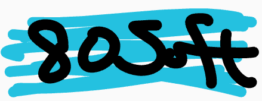

80Softのホームページ
80Softとは、小学六年生の男子がScratchで経営（活動）する、企業（？）である。
80Softの代表的な作品一例
StacOSvβ1.7
↑の作品はココからダウンロードできます。(TurboWarpPackegerで作成)
またはココからでもダウンロードできます（OneDrive）。
ダウンロードしたファイルはWebブラウザー上で動作します。
Cat-Nite
ぜひScratchのアカウントを作ってコメントしてね！下ではScratchのアカウントを作る方法を説明しているよ！！（ユーザー名ダブって時間長くなっちゃたよ。）
このホームページの質問
80Softさん Q:「このホームページは誰が作りましたか？」
A:もちろん自分で作りましたｗ。
80Softさん Q:「このホームページはどのくらいで完成しましたか。」
A:20分ですね。手抜きですｗ。
80Softへのお問い合わせフォーム